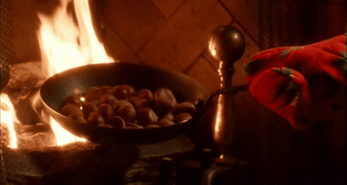

Growing Our Chestnuts
Planting and growing chestnut trees is a rewarding
challenge. As with growing anything, there are
some tips and tricks to growing chestnut trees. The
goal of the Pennsylvania Chapter of the American
Chestnut Foundation (PA-TACF) is to restore the
American chestnut (Castanea dentata) to the forests
of the mid-Atlantic. To do this, we must plant a lot
of trees! To date, we have planted over 22,000 trees
as part of our mission. If you plan to join our efforts,
please take a few minutes to review the following
information so that you might get the most out of
your chestnut planting. We hope that by following
the recommendations contained within, that you will
realize the growth potential necessary for timely inoculation and nut production.